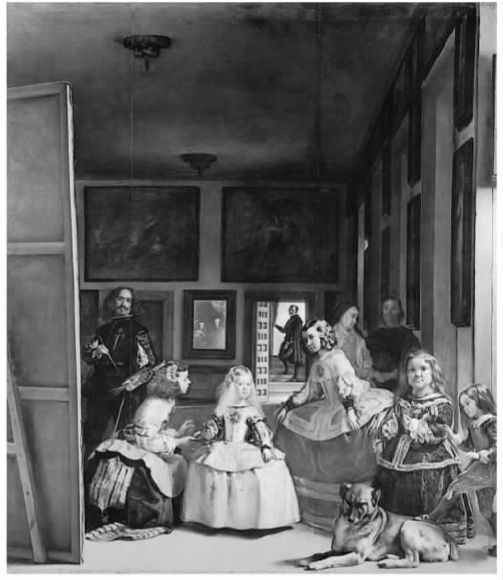
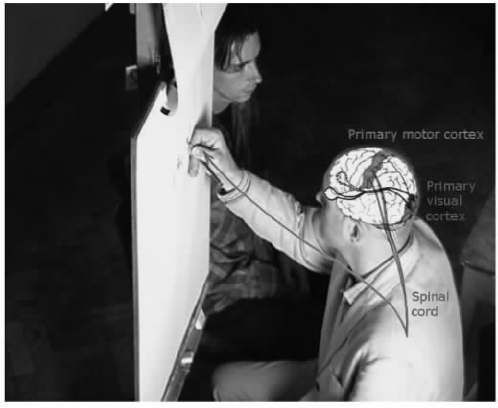

看起来性别、性取向与民族、种族、政治和宗教都对艺术的意义具有一些影响力。人们对于一些艺术作品的含义（例如《蒙娜丽莎》中人物的微笑）已经争辩了许多个世纪。艺术也和语言一样负载着一定的信息吗？为了搞清一件作品的意义，我们必须知道些什么？是有关艺术家生活的外部因素，还是有关他们如何制作作品的内部情况？我们不能只为享受而去看一件艺术作品吗？在本章中，我将通过介绍和考察两种主要的艺术理论——表现论和认知理论，来探讨关于意义和阐释的问题。
在第三章中，我回顾了约翰·杜威的主张——艺术是理解一种文化的最好方式。他认为你需要学习如何去理解另一个社会团体的艺术“语言”，在另一方面，这种“语言”本身也提供了一种意义。艺术的语言不是文字的语言，杜威说，理解艺术如同理解另外一个人。你也许知道怎样解释你所爱的人的微笑，但是你能用一句话将其概括出来吗？你之所以能解释它的意思是因为你了解它。理解艺术同样需要了解背景和文化方面的知识。佛教艺术不可能有一种基督教的含义，《波里洛盒子》对于古代的雅典人来说没有任何意义，澳大利亚土著的圆点画也许与纽约和巴黎的现代油画相似，但是艺术家的目的和意图各不相同。
艺术中的表现论和认知理论都认为艺术是交流 的载体，它能交流感受和情感或者思想和观念。阐释之所以重要是因为它有助于解释艺术是如何做到这一点的。艺术的意义部分来自它的背景，对杜威来说，这是一种可交流的文化背景。对阿瑟·丹托来说，这是更加独特的艺术世界背景。一位像沃霍尔这样的艺术家在一个具体的社会情境下创作作品，这种社会情境能使他赋予作品某种特定的意义。当沃霍尔展出他的《波里洛盒子》的时候，它的意思是（部分是这样）“这也能成为艺术”，这件作品已经不同于在零售商店卖的普通的肥皂包装盒了。
对于作品，批评家有时会提出一些不被艺术家本人认可的阐释，例如，女性主义批评家认为由雷诺阿、毕加索和德·库宁这样的大艺术家画的裸体反映了男性看待女性的方式（他们将女性当作他们的缪斯女神或者性资产）。如果艺术家本人不同意批评家的观点，这种对艺术作品的阐释有什么合理性？
我想通过解释一幅作品怎样发挥交流思想、情感和观念的功能来描述对作品的阐释。一种好的阐释必须基于理性和证据之上，应该提供一种丰富、复杂和具有启发性的方法来帮助人们理解艺术品。一种阐释有时能将一种艺术体验从反感转变为对作品的欣赏和理解。下面这个例子就有助于我们了解这些。
尽管没有一种阐释是绝对“正确”的，但是一些艺术阐释看起来比其他的更加合理。让我们来考察一位因作品阐释而引起争议的艺术家，杰出的爱尔兰裔英国表现主义画家弗兰西斯·培根（1909—1992）。培根画了一些看起来是经受了折磨并且处于绝望中的人。他画的人物是扭曲的，他们正张嘴尖叫，研究者说培根使人看起来像一块块生肉。人们正是从对他作品的观看中得出这种最初印象的。
例如，仔细考察一下培根1973年创作的纪念碑式的《三联画》，在画面的中心一个男性人形坐在抽水马桶上，下面渗出一摊蝙蝠形的预示恶兆的泥浆。画面形象看起来黑暗又令人不安，似乎在散发着死亡的气息。但是，这幅画就像其他画一样，画面的形式特征抵消了内在的情感碰撞。三联画的形式本身让人想起宗教中的圣像和祭坛装饰。作品中痛苦的感觉被几乎静止的构图和不同寻常的深颜色所抵消。让我们来回顾一下玛丽·阿布关于培根作品中的这种张力的评论：
批评家们集中了运用各种方式进行的阐释。一些人轻视作品对情感和对意义的追求，只关注构图的美感。形式主义批评家戴维·希尔韦斯特是这种倾向的早期辩护者，在面对许多人对画面上的悲惨内容提出反对意见的时候，他很早就强调培根对抽象因素的运用。特别是在培根作品（就像塞拉诺的《尿浸基督》一样）第一次被展出并颠覆了观众意识的时候，有必要指出这些画是如何真正显示了形式。但是希尔韦斯特在这方面走得太远，为了达到目的他甚至降低了培根作品中内在情感因素的重要性。希尔韦斯特认为培根作品中“流着血尖叫着的嘴……只是在对粉色、白色和红色进行无关痛痒的研究”。我想说，希尔韦斯特的早期批评作为对培根作品的阐释是不充分的。
一些批评家为了更正希尔韦斯特过于形式主义的批评，走到了完全的对立面，他们提供了对培根作品的一种精神生物学阐释。弗兰西斯·培根小时候因为同性恋行为被他的父亲鞭打并被踢出家门，因此父子之间保持着一种可怕的关系。他的情况很适合弗洛伊德的理论。也许培根生活的其他方面在他的艺术中得到了反映，他那可怕的画面形象也许反映了他二战期间在伦敦被炸毁的建筑中清理尸体的经历。培根过着一种不同常人的疯狂生活，他酗酒、赌博，并持续地进行性虐待的异常性行为。
培根本人拒绝别人根据他的个人困扰和想象中的20世纪的焦虑来研究他的作品。他声称他的作品只关乎绘画 。他迷恋其他画家，特别是委拉斯开兹、毕加索和凡·高。培根以他独特的风格重新创作了一些他们的著名作品，以致他的作品看起来好像真的关乎在一个新的不同时代如何画画的问题。然而，我还是不太相信培根所说的话，但我也不会完全排除他传记中的内容，传记提供了关于作品的可怕内容和原始创作冲动的一些背景资料。
另外一位批评家约翰·罗素帮助我们看到了培根作品中模糊的人形来源于摄影家艾德沃德·迈布里奇对于动物运动的研究。早期摄影家的延时照片影响了培根作品中那些奔跑的狗和摔跤的男人的形象。罗素解释说培根试图模糊呈现和抽象之间的边界。在与杰克逊·波洛克这样的抽象主义艺术家之间进行的竞争中，培根以一种新的方式来利用摄影术，他好像完全否定了这种突然出现的写实媒体对于绘画的挑战。
关于培根绘画的批评论争是艺术世界中一种典型的辩论。我并不认为这些意见冲突是水火不容的。批评家帮助我们看到了艺术家作品的更多方面，使我们更好地理解了它。如果他们对艺术家的作品做出了更多方面的阐释，这种阐释就更高级了。最好的阐释既关注培根作品的形式风格也 关注其中的内容。在阐释培根的时候，我不会将他的艺术“浓缩”成他的传记，但是他的一些生平事迹似乎能揭示他是如何描绘人的。例如，传记作者解释了我们讨论过的那幅1973年的《三联画》中的形象，作者认为那幅画“涉及”一个特殊的死亡事件，它既是对乔治·戴尔（培根过去的情人）的自杀所使用的驱邪咒语，也是对其自杀的纪念。在培根一个重要画展开幕前，乔治·戴尔在巴黎酒店的浴室里自杀身亡。知道了这些，人们会用不同的眼光来看这幅作品，它看起来依然可怕（也许让人更加害怕），但它成为了一种令人印象更深刻的艺术变形的成果。但是内容同样并不代表一切，培根作品的形式、构图和艺术来源也同样重要。
对如何阐释培根的个案研究说明了我喜欢的艺术认知理论：培根的艺术作品可以传达复杂的思想，在这一点上这样的艺术作品和语言一样。但是另外一种对于艺术的时髦解释——表现论看来可以运用到培根身上，这种理论认为艺术就像大笑和尖叫一样，能交流情感。培根看起来确实想表达某种感受，实际上他的一些作品本身（不仅是作品中的人）就好像在尖叫。那么，让我们更近距离地来考察一下艺术的表现论。
正如我们所希望的，表现论认为艺术能传达一些感觉和情感领域里的东西。俄国小说家列夫·托尔斯泰（1828—1910）在他的文章中提出这一观点：“什么是艺术？”托尔斯泰认为一位艺术家的主要工作就是将感情表达和传递给观众：
表现论对于某些特定的艺术家和艺术风格的阐释很有效，其中突出的例子是抽象表现主义，抽象表现主义似乎全都是为了表达感受。例如德·库宁画的裸体，像是在表达艺术家对于既充满诱惑又贪婪且令人恐怖的女人的某种矛盾而复杂的感受。马克·罗斯科的黑色绘画好像表现了某种压抑和阴沉的情感。培根的绘画表现了焦虑和绝望。表现论似乎也很适合阐释音乐。巴赫的音乐表现了他的基督教精神，就像瓦格纳在《帕西法尔》的音乐中所表现的那样。表现也存在于现代音乐中，波兰作曲家彭代雷茨基的《广岛遇难者的挽歌》以小提琴在高音区发出的一连串的尖利声音作为开场，似乎表达了一种核战后痛苦的尖叫。
但是一些理论家在批评托尔斯泰的观点时指出，艺术家不需要为了表现一种感觉而先具有这种感觉。如果培根花几个星期甚至几个月来完成他1973年的《三联画》，他似乎不可能在整个过程中都只“感受”着一种情感。与此相似，彭代雷茨基也不一定是在他满怀对一座被炸毁的城市的感受（更别说爆炸中遇害者的感受）时创作他的音乐作品的。他以一个不同的标题创作了一部表现性的音乐作品，只是后来给这部作品重新命名为《广岛》。当音乐或者美术表现了一些什么的时候，也许人们更应该了解这部作品的结构方式，而不是去考察艺术家在一个特定的日子里正在感受什么。这种表现存在于作品 之中，而不是在艺术家 身上。这种表现使得彭代雷茨基的音乐能在完全不同的背景中有效地发挥作用，如在斯坦利·库布里克的灵异电影《闪光》的电影音乐中。
另一位将艺术看作表现的理论家是精神分析学家中的先驱西格蒙德·弗洛伊德。当然，弗洛伊德和托尔斯泰最关键的不同之处在于弗洛伊德认为艺术表现了潜意识 的感觉，也许艺术家不会承认有这种感觉。弗洛伊德描述了几种基于生理学上的欲望，它们既是有意识的也是无意识的，并且按他所说的那样在所有人心中按照预先设定的方式发展着。他关于意识和艺术中的表现的解释具有很大影响。弗洛伊德把艺术看作某种形式的“升华”——代替了我们对于生理上天生具有的欲望的一种满足。弗洛伊德解释说：
艺术家通过表现幻想或者白日梦来摆脱神经官能症，同时给其他人提供了一种常规的享乐资源。
升华听起来像一个负面的概念，因为当我们不能得到“现实中的东西”的时候，我们才会升华。但是弗洛伊德认为升华是很有价值的，部分原因是它使人创造出艺术和科学方面了不起的成果。此外我们也不能让心里产生的每一种欲望都得到满足，如果这样，我们将因为放弃对文明的必要限制而破坏人类文明。弗洛伊德认为艺术表达了潜意识中普遍存在的欲望，弗洛伊德为了把握艺术家的个人生平而研究生物学，他同时强调艺术作品与其创造者的潜意识感受和欲望之间的关系。
从弗洛伊德开始，许多理论家都发现心理分析的阐释方法很有见地。用心理分析中的“阉割焦虑”理论也许能解释德·库宁画的令人恐怖的巨幅女性裸体。其他心理分析研究也被大家所熟知，其中包括弗洛伊德对哈姆雷特的“俄狄浦斯情结”的独特解释，弗洛伊德还写过文章研究米开朗琪罗的《摩西》、莱昂纳多的一些绘画以及E.T.A.霍夫曼的“离奇”故事。
弗洛伊德关于莱昂纳多·达·芬奇作品的讨论集中于艺术家曾经在摇篮中被一只捕食的大鸟光顾的童年记忆。莱昂纳多的文字由意大利文翻译到德文的时候出现了错误，这使迷惑的弗洛伊德将这只鸟理解为秃鹰，他觉得我们在莱昂纳多那幅名画《圣母、耶稣和圣安娜》中能看到秃鹰的形象。弗洛伊德接着分析了莱昂纳多那些人所共知的画面形象，如《蒙娜丽莎》中那有名的微笑以及漂亮的小孩头像。弗洛伊德声称这些作品反映了艺术家的童年：
并不是每一种表现论都需要接受这种想象性的心理分析。弗洛伊德的理论确实提出了许多问题，它分析了潜意识的欲望、性欲（按照规定的步骤发展）、升华必备条件的存在，等等。我接下来想要描述一群表现主义理论家，他们更多关注艺术本身而较少关注生物学，他们认为艺术能表达更多自觉的意识和信仰。
不管是托尔斯泰还是弗洛伊德的表现论都有一个主要问题，那就是它们过分受限于艺术只能表现情感（不管是有意识的还是无意识的情感）。古代悲剧和中世纪的大教堂像禅宗花园、奥基夫或培根的画一样，表达的不仅仅是情感，还有信仰体系、对宇宙及其秩序的看法、对艺术中抽象因素的认识等。提出这种异议的一种方式是认为艺术不仅能表现或传达感受，也能表现和传达观念 。
这种表现论的修订版或者提升版是由许多人发展起来的，其中包括贝内德托·克罗齐（1866—1952）、R.G.科林伍德（1889—1943）和苏珊·朗格 [1] （1895—1985）。尽管他们在细节上有不同意见，但是他们三人都认为艺术能表现或传递观念和感受。朗格辩解说实际上在观念和情感的表达之间并没有一条明确的分界线：
艺术家之所以被人崇拜，常常是因为他们能够用原初的、恰当的、只适合特定媒介的方式来表现观念。朗格解释说：
托尔斯泰认为艺术家的感受“融入”到了作品之中，科林伍德争辩说，在某种程度上，创作作品开始于拥有某种感受之前 。在艺术中表现这种感觉是理解这种感觉的一部分。他解释说：“直到一个人的情感表现完了，他甚至还不知道这是一种什么样的情感。表现的行为因此变成了一个探索自身情感的过程。他想弄明白这种情感是什么。”当观众追随艺术家的这种努力时，我们重新创造了这个自我发现的过程，因此我们也变成了艺术家：“这正如柯勒律治所提出的那样，我们之所以认识一个诗人是因为他把我们变成了诗人”。
表现论常常强调个体艺术家的欲望和情感，但是艺术家的作用被最近那些支持所谓“作者死亡”观点的人所轻视。这些人有法国理论家罗兰·巴特和米歇尔·福柯。福柯（1926—1984）1969年写了那篇很有影响的文章《什么是作者》。他辩解说，我们使用作者这个概念是为了识别“作品”这类东西，因为其恰好具有重要性和“规训话语”。福柯批评他称之为“作者功能”的东西，他认为我们太局限于通过接受“作者想要做什么”来寻找对作品的正确解释。那么，他自己对意义的另一种解释是什么呢？
福柯观点的一个例证来自他1966年的著作《事物的秩序》的开头一章，在这里福柯讨论了委拉斯开兹一幅非常有名的画《宫娥》。委拉斯开兹的这一巨幅杰作画于1656年，是一幅描绘和女仆在一起的西班牙小公主的肖像。画面中的人出现在一个巨大的房间里，她们周围还有其他人物，其中包括艺术家自己，他站在画架前。我们还看到一条狗、几扇窗户、一扇门、挂在墙上的几幅画和在远处背景中的一面镜子。镜子中反映出公主的父母（也是艺术家的赞助人）——西班牙国王和王后的模糊形象。
委拉斯开兹的画给观众提出了一种似是而非的东西或者说有双关意思的难题。由于它引起的视觉困惑，人们很难对其做出阐释。例如画中的艺术家正在绘制一幅巨大的画——顺便提一下，画中的画和《宫娥》的比例大体一致——但是我们不知道他在画的是什么。如果我们能看到，它会是我们正在看的这幅画本身吗？此外，镜子中的国王和王后的形象又是来自何处？

图20 在迪亚戈·委拉斯开兹的《宫娥》（1656）中，艺术家描绘自己正在画画的情景，他画的就是这幅画吗？
对他们形象的投映似乎为了暗示他们就出现在这幅画前面，但他们所处的位置正是我们站立着看画的位置！
福柯描述了在这幅画前进行的一次迷人的视觉游历，他称之为“一种再现的再现”。这幅画描绘了许多表现视觉现实的模式，其中包括图画、门、人物甚至光线本身。福柯不是按照“作者”（即艺术家）的意图来阐释作品，而是将其作为作品所处时代观看方式的范例。福柯将这种特定文化的观点标明为“知识”。《宫娥》典型地反映了现代前期的知识，人在观看世界时，这种知识将一种新的关注注入感知者的自我意识和角色定位。具有讽刺意味的是：根据福柯的理论，在这种知识中，知识主体并不能真正感知他自己。我们这些观看者似乎被国王和王后取代了，他们是这幅画的所有者和委托人，因此，他们才是这幅画“严格意义上的”观众。我们不能看清或者“拥有”这幅画，因为它背对着我们。
福柯对于《宫娥》的阐释受到了一些学者的质疑，他们认为福柯把画家如何使用透视的细节搞错了，他们争辩说，还不如搞清楚镜子里到底画的是谁或者是什么东西。也许镜中投映的形象不是被设想为站在我们所处位置（画面之外的）的国王和王后，而是委拉斯开兹正在画的那幅画中的人物形象。因为这幅画背对着我们，所以我们不能确认到底是怎样的情况。
削弱这种简略的总体看法的一个关键点是：即使福柯反对我们通过考察艺术家的思想意识来阐释艺术，但是他假定艺术作品确实 具有某些意义。与其说意义与艺术家的欲望和思想有关，不如说它与艺术家生活和工作的时代相关。艺术家与其他知识分子（包括哲学家和科学家）共享特定知识背景下的关注主题。通过聚焦于艺术家的社会和历史背景，福柯的观点变得与杜威和丹托的观点相似。他们好像都同意艺术具有一种意义，这种意义是基于总体文化和具体历史背景之上的。
我在这本书里不断提到约翰·杜威的观点，他以实用主义哲学方法的主要倡导者而著称。实用主义是美国对世界哲学最主要的贡献。杜威之前的实用主义者如威廉·詹姆斯和查尔斯·桑德斯·皮尔斯发展了一种新的真理观，强调有用性或者甚至是“钞票价值”而不是抽象的理念（比如“现实”的对应物）。实用主义者规定知识不仅是一种支持性的建议以及真理，例如，他们认为会有“技能知识”和情感知识。
杜威将知识定义为“工具”，他解释说知识“是通过控制它指导下的行动而获得直接经验的工具”。我之所以将杜威的方式归类到艺术的认知理论中去，是因为他在他的著作《艺术即体验》中，将实用主义对知识的解释运用到了艺术分析之中。他强调艺术在促进人们感知、操控或者把握现实方面所发挥的作用。艺术在我们的生活中具有某种功能，不应该使它变得遥远与深奥。艺术不是某种被藏到架子上的东西，而是人们用来丰富他们的世界和感知的东西。杜威争辩说艺术能提供和科学同样多的知识资源。艺术传递着如何去感知我们周围世界的知识，这是某种不能被缩减为一系列主张的东西：“艺术的表现媒介既不是客观的也不是主观的。它是一种新体验，在这种体验中客观和主观彼此协作，任何一方面都不能只靠自己而存在。”我们能从艺术中获得什么，取决于我们的目的、状况和意图，它总是“活跃”的或者与生活体验相关联。
一位离我们更近的发展了实用主义艺术观的哲学家是哈佛大学教授纳尔逊·古德曼，他的重要著作《艺术的语言》出版于1968年。和杜威一样，古德曼鼓吹艺术在我们生活体验中的作用。古德曼也没有将知识或认知的定义局限于一系列枯燥的表述之中，他在书中写道：
当古德曼分析那些在艺术中获得意义和参照的复杂的象征结构的时候，《艺术的语言》发展了杜威提出的艺术即一种语言的观点。不同的艺术在这方面的表现是不同的：音乐有乐谱而舞蹈却没有，不同的观念体系被运用到诗歌和音乐这样的艺术形式之中，绘画或雕塑用其他的方式来发挥交流的功能。但是每一种艺术形式都扩大了我们对于同一个世界的理解。古德曼认为：艺术也同样能达到那些促使科学设想获得成功的标准——清晰、优雅和“恰当的表现”（这是最重要的）。在古德曼的实用主义观点中，科学理论和艺术作品创造了与我们的需要和习惯（或者能成为我们的习惯的东西）似乎恰好相关的世界。就像古德曼在《艺术的语言》的结论中所提出的那样，如果它们能够做到这一点，它们就能“帮助我们创造和理解我们所处的世界”。
古德曼没有太多谈到艺术家个人在他们的作品中实际表达的东西。他在书中也很少谈到阐释。古德曼的著作主要受到了当时的感知心理学的影响。他关注各种艺术如何通过改变我们的感知模式以及我们与周围世界互相影响的模式，从而获得一种认知价值。考虑到他的这些观点，尽管他和杜威在风格、目标方面有许多看似不同的观点，但是他却是杜威真正的继承人，因为他们两人都将艺术看作人类用来干预周围环境的某种东西，通过转变我们的感知，艺术给予我们活力。
从弗洛伊德、杜威甚至古德曼所处的时代开始，对于感知和意识的研究已经发生了根本性的进展和改变。作为横跨心理学、机器人技术、神经系统科学、哲学和人工智能的一门令人激动的学科，新的认知科学领域对于我们如何理解艺术的创作、阐释和欣赏已经有了重要的影响。神经系统科学已经使用了磁共振成像来研究在完成肖像画或者抽象设计的时候，艺术家和非艺术家的大脑活动之间有什么不同。新的科学研究解释了在绘画中我们的视觉观察如何发挥作用或者为什么我们会认为某些图案和颜色是漂亮的。如果有关记忆和大脑的新研究不同意弗洛伊德关于压抑机制的基本假设，那么弗洛伊德的利比多理论就不会那么貌似有理了，心理分析就不再能成为一种艺术理论。最近在感知心理学上的研究已经在某些重要方面推翻了古德曼关于哪种图像是“现实”的以及为什么如此的理论。

图21 科学家克里斯·迈阿尔和约翰·切阿仑科研究正在画肖像速写（1998）的艺术家汉弗莱·欧莘的大脑活动，他们还对他工作时的大脑进行了磁共振成像检查。
认知研究的革命已经被运用于电影理论中，它被用于解释我们如何把握电影中对人、地点和叙事的视觉描写。研究者正在进行关于人类如何阐释和记忆音乐结构的实验性研究。黛安娜·拉夫曼在她的著作《语言、音乐和意识》中讨论了在音乐感知方面的研究，这项研究解释了某些审美现象，诸如音乐中所谓的“不可言说感”。泽米尔·泽基 [2] 支持亚历山大·考尔德 [3] 的看法，考尔德认为通过研究我们的大脑细胞如何发信号给运动感知，混合色会从神经功能上“扰乱”对他的活动雕塑的清晰认知。泽基认为“艺术家在某些意义上是神经学专家，他们可以以独特的技巧来研究大脑，然而却是不知不觉地研究大脑及其组织”。
也许并不奇怪，一些人担心对艺术做出一种科学解释将会是简单化的。怀疑者也许会不接受最近（1999年夏天）在《意识研究期刊》上关于艺术与美的讨论。在这次讨论中，卓越的神经系统科学、心理学教授V.S.拉马钱德兰试图概括艺术体验的八个标准或者条件：
拉马钱德兰要求概括艺术原则的主张看起来宏大但又容易受到别人的挑战。（为了公平起见，这本期刊也发表了来自科学家、艺术家和艺术史学家的批评。）这位科学家假设所有艺术都以美作为追求目标（他甚至退到谈论什么是“漂亮”上去了），但是我们从第一章（关于鲜血）得知这种认识是错误的。此外，他在上面的引文中使用了“愉悦”这个动词，看起来具有太强的个人倾向，因为这篇文章中的许多插图都是描绘色情的裸女的。这篇文章表明“我们”对于艺术品美的兴趣来自普遍的进化规则，这是迫切需要某些游击队女孩进行干涉的一个观点。
尽管我们很容易对拉马钱德兰的观点进行批判，但是他的文章确实提出了有意思的建议，例如，关注“极端转换效应”的重要性。这是在心理学上广为人知的一种现象，一个通过训练来认识一种现象并对其做出反应的受试者对于这种现象的夸张性实例将做出更强烈的反应。这也许能解释漫画或者用极端、变幻的形状和色彩体系来表现某种可辨认形象的艺术能取得成功的原因。最后，既然艺术不可避免地要依靠感知和认知过程，那么研究艺术的神经功能基础是有趣和有启发性的。
让我来做一个总结。在本章考察的艺术理论——表现论和认知理论中，艺术在人的交流中发挥了关键作用。这使得阐释变成了一项重要任务，因为它想要清楚概括艺术家或艺术品交流的内容。表现论集中研究艺术家在作品中想要表现什么。一些支持这种观点的人（像托尔斯泰和弗洛伊德）强调被表现的是感觉和欲望（有意识或无意识的）。其他思想家（克罗齐、科林伍德、朗格）辩解说艺术以复杂的方式帮助艺术家表达情感，这往往和表现观念相关。这种表现论更接近艺术的认知理论，它认为艺术有助于提供知识。杜威的实用主义艺术观强调艺术即一种有洞察力的认知形式，认为艺术运用了类似语言的结构。当然，对于观众如何“接受”艺术家的这种感觉或思想也存在不同意见，有人认为是直接传递（托尔斯泰），有人认为是通过认可一种共同的幻想（弗洛伊德），有人认为是通过共享一种知识（福柯）或者通过一个类似语言阐释的过程（古德曼）。
许多人对如何阐释艺术进行了理论总结，不管用表现论还是用认知理论，它们都具有共同的基本理念，那就是艺术是一种有意义的人类活动，通过它，有意识的人能够交流。为了解释这一点，艺术理论家吸收了哲学和人文科学（如人类学、社会学、心理学，特别是感知心理学）方面的知识。弗洛伊德的艺术理论是从他自己对意识的重新解释中发展出来的。福柯的理论包含较少个人化和生理学上的东西，但包含着更多的社会史方法，通过这种方法福柯建构了他对于意识的解释。杜威认为艺术是建立在身体机能之上的，也是置于文化中的。古德曼从他所处时代的最高水平的感知心理学中寻求灵感和洞见。所有这些艺术理论家可能都被认知科学的新发展激起了研究兴趣。
我同意杜威关于艺术是一项认知活动的观点。也就是说，像弗兰西斯·培根这样的艺术家以一种能传达给观众的方式来表达思想和观念，丰富了我们的体验。艺术家是在一定的社会历史环境中做这些的，他们的“思想”能满足那种背景的特定需要。艺术家现在在丹托所说的“艺术世界”背景下发挥作用，在这个“艺术世界”中，一系列的机构将艺术家与社会、历史和经济环境下的公众联结起来。他们通过公认的渠道创造和传播知识：展览、表演、出版。艺术家运用符号再现和表达感觉、观点、思想和观念。艺术家将它们传递给观众，反过来他们必须能对艺术作品做出阐释。
“阐释”就是给一件艺术作品的意义提供一种合理的解释。我不相信能对艺术作品做出这种认知贡献的只有一种真正的解释。只不过有些阐释比其他阐释更有效罢了。最高级的阐释是理由充分的、细节丰富的、似乎可信的。它们反映了背景知识和理性辩论的共同标准。专家的阐释对于艺术交流的成功与否很关键，它同时也在新艺术家的教育和训练方面发挥着重要作用。阐释和批评性的分析有助于解释艺术，但这样做并不是要告诉观众去思考什么，而是为了使我们自己更好地观看艺术作品并对其做出反应。